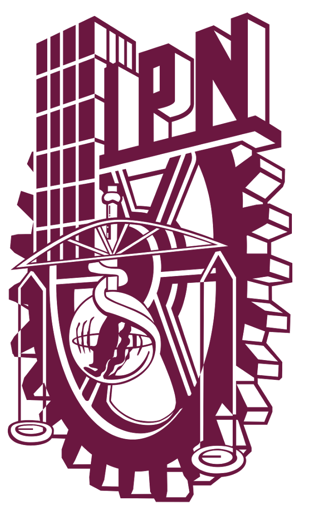

Tengo 20 años, vivo en el Estado de México.
Estoy cursando la carrera de Ing. en Sistemas Computacionales, en la Escuela Superior de Computo, perteneciente al reconocido Instituto Politécnico Nacional

Objetivo
“
Quiero llegar a ser de los mejores desarrolladores de software, actualizandome con las nuevas tecnologias, aprendiendo cosas nuevas diariamente, relacionandome con los nuevos sistemas, diseñando y desarrollando nuevos programas.
Así como ser parte de una empresa de alto impacto en el mundo.